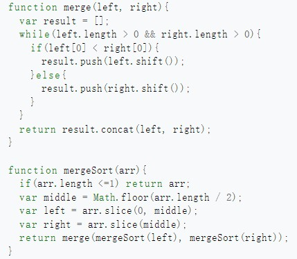

Merge Sort
1.What is merge sort?
The merge sort is a comparsion based sorting algorithm, which uses the divide and conquer technique, which is mentioned by John von Neumann in 1945. The first step of merge sort is to divide the initial array into two parts, the two parts is divided with equal numbers or one part has one more number than the other. Then, we divide the two parts into four parts. Repeat above operation untill there is one number in one part. So we compare the number between every part from the last spilt and we do a combination to make the divided part into one part. That is, if we have n parts and n numbers here, after the sort and combination, we have n/2 parts. Then we compare the first number with the first number of the next part and the the second number untill the number in the next part is bigger the the first number.
2.History about merge sort.
The merge sort algorithm was first invented by John von Neumann in 1945, but the modern version of the algorithm was developed by John McCarthy in 1956. Since then, merge sort has become one of the most widely used sorting algorithms in computer science, and it has been implemented in numerous programming languages and software applications.
3.The feature of merge sort
A.Time comppexity:Merge sort has a time complexity of O(n log n), which means that it can sort large datasets in a reasonable amount of time. This makes it a popular choice for sorting large datasets, such as those found in scientific research, financial analysis, and data mining.
B.Stability:A sorting algorithm is said to be stable if it maintains the relative order of equal elements in the input array. Merge sort is a stable sorting algorithm, which means that it preserves the order of equal elements in the input array. This is important in applications where the order of equal elements is significant, such as in financial analysis or scientific research.
C.Scalability:Merge sort is also a scalable algorithm, which means that it can handle large datasets without running out of memory or crashing the system. This is because merge sort breaks down the input array into smaller and smaller subarrays, which can be sorted independently and then merged back together. This allows merge sort to handle datasets that are too large to fit into memory all at once.
D.Non-in suit sorting: Merge sort requires additional memory to store the subarrays during the sorting process. This additional memory can be a disadvantage in applications where memory is limited or where the input array is very large.
E.Difficult to understand: it has a complex process, you must divide the initial array into arrays which contain one number one by one and make a complex sorting and make a combination to make the array which just have one number to the new array which have the same length with the original array.
4.Example codes

Reference
Image source:https://zh.wikipedia.org/zh-cn/%E5%BD%92%E5%B9%B6%E6%8E%92%E5%BA%8